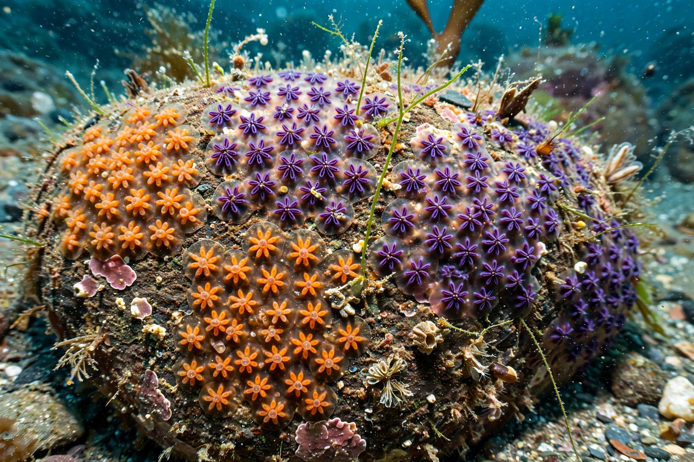

Botryllus schlosseri, the star ascidian or golden star tunicate, is a colonial tunicate (sea squirt) native to the Mediterranean and north-east Atlantic, now widespread worldwide as an invasive fouling organism.
| Botryllus schlosseri | |
|---|---|
 | |
| Kingdom | Animalia |
| Phylum | Chordata |
| Class | Ascidiacea |
| Family | Styelidae |
Colonies consist of zooids arranged in star-shaped systems embedded in a common tunic, sharing a vascular network. They reproduce sexually and by weekly asexual budding cycles (blastogenesis), can fuse with kin or reject non-kin via a histocompatibility system, and regenerate whole bodies from vascular tissue — making the species a model for stem cell, immunity and regeneration research.